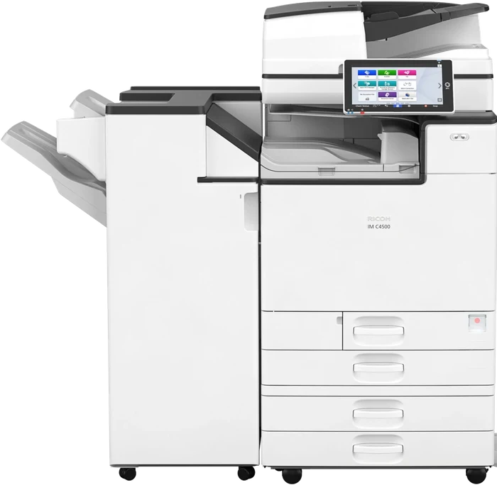
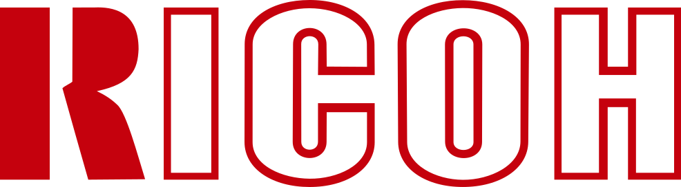
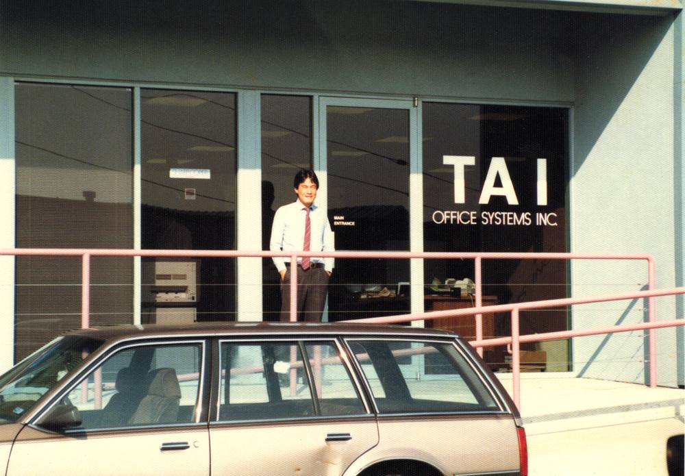
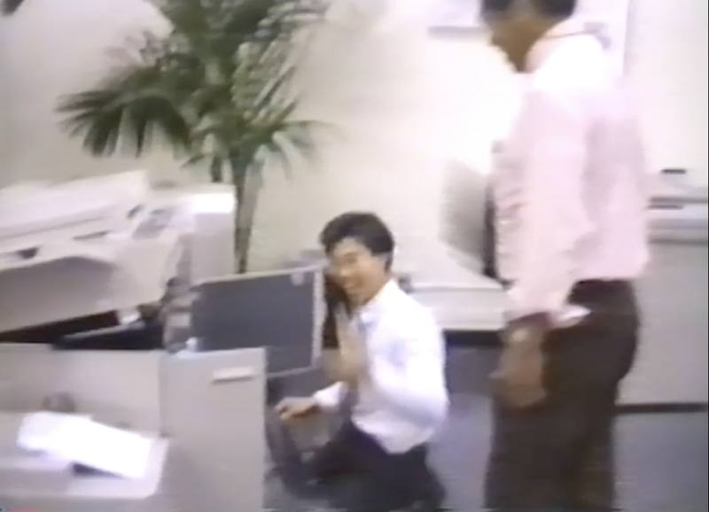

Lease
A monthly lease on a refurbished Ricoh, paired with a service plan.
Color multifunction copiers for businesses, schools and nonprofits across the San Francisco Bay Area. Professionally refurbished Ricohs, installed and serviced by our own local team.


Professionally refurbished Ricoh color multifunction copiers, with speeds up to 60 pages per minute. Each one copies, prints and scans for the whole office.
A monthly lease on a refurbished Ricoh, paired with a service plan.
Month-to-month, or short term for events and projects.
Own a refurbished Ricoh outright, tested and ready to print.
Toner, parts and repairs for a Ricoh you already have.
Lease ending soon? Send us the end date and we'll have a replacement ready. Lease ending options
Schools, law firms, churches, nonprofits and offices across San Francisco, the Peninsula, the East Bay and Marin. Many have been with us for years.
Areas: San Francisco, the Peninsula, Oakland and the East Bay, Marin, and parts of the South Bay.
We're local, so when something goes wrong we get there fast. Most service calls are handled the next business day.
Most customers pair their copier with a service plan covering toner, parts, labor and repairs. We offer per-page and flat monthly plans, or you can pay per visit. We'll recommend the right fit with your quote.
Have a Ricoh from another dealer? We can service it too.
Jim Tai and Paul Lam started Bay Area Office Systems in 1995 to give local businesses reliable Ricoh copiers and honest service. Today Jim's son Kyle works alongside Paul, and the same small team still handles every install and repair.


It depends on the machine, how much you print, and how much of it is color. Tell us roughly how many pages you print each month and we'll send a quote.
Yes. Every copier we place is also a network printer for the whole office, so most teams don't need a separate one. We don't lease standalone desktop printers.
You get a commercial-grade Ricoh for a lower monthly cost. Every machine is inspected, cleaned and tested, with worn parts replaced, before it goes into your office.
Most leases are 36 months. If you need something shorter, we also rent month-to-month.
Two to three months before it ends. Many leases renew automatically unless you give notice, so it helps to plan early.
Often, yes. Send us the model and we'll let you know.
For current customers. Request service or toner with the form below, or email info@bayareaofficesystems.com.
Keep printing. Send us a toner request with your company name and which colors, and we'll deliver before it runs out.
Follow the animation on the copier's screen, open the cover it shows, and gently pull the paper out. If it won't clear, turn it off for 30 seconds and back on, then send us a service request.
Check the address is spelled correctly and the copier is still on your network. If your office changed internet or email providers, let us know and we'll update the settings.
Download the Ricoh driver for your model (it's on the front of the copier) and choose the PCL 6 driver:
Then add the printer using the copier's IP address. Different model, need the IP, or stuck? Email us and we'll walk you through it.
Press Counter or User Tools on the control panel, then email us the black and white and color totals with your company name.
Quotes, service, toner or questions. We'll reply by email, usually within one business day.
Or email info@bayareaofficesystems.com
or call (650) 992-2000